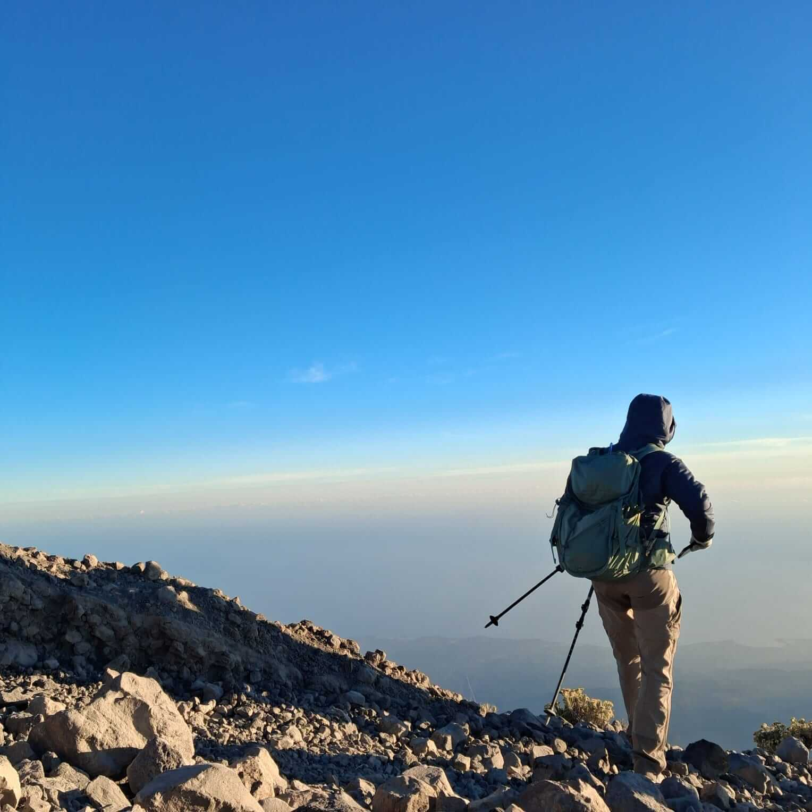

Waterfall Sendang Gile merupakan salah satu destinasi wisata air terjun paling ikonik dan mudah dijangkau di Pulau Lombok. Terletak di Desa Senaru, Kecamatan Bayan, Kabupaten Lombok Utara, Nusa Tenggara Barat (NTB), tempat ini menjadi lokasi persinggahan favorit wisatawan sebelum atau sesudah menjelajahi jalur pendakian Gunung Rinjani.
Daya Tarik Waterfall Sendang Gile
Sendang Gile menawarkan panorama air terjun bertingkat dua dengan ketinggian mencapai sekitar 30 meter. Aliran airnya bersumber langsung dari mata air pegunungan Gunung Rinjani, menghasilkan air yang begitu jernih, dingin, dan menyegarkan tubuh.
Akses menuju air terjun ini tertata sangat rapi melalui tangga berundak yang dikelilingi pepohonan hutan hujan tropis yang rimbun. Di sepanjang perjalanan, Anda berkesempatan mendengar kicauan burung liar serta melihat kawanan monyet abu-abu dan lutung hitam yang hidup damai di kawasan konservasi Taman Nasional Gunung Rinjani.
Masyarakat setempat percaya bahwa membasuh muka atau berendam di aliran air Sendang Gile dapat memberikan kesegaran awet muda dan meredakan kepenatan otot setelah perjalanan jauh.
Harga Tiket Masuk & Parkir
- Tiket Masuk Kawasan (Domestik) Rp 10.000 / orang
- Tiket Masuk (Mancanegara) Rp 20.000 / orang
- Parkir Sepeda Motor Rp 5.000 / unit
- Parkir Mobil Rp 10.000 / unit
Jam Buka & Akses Perjalanan
Sendang Gile buka setiap hari mulai pukul 07.00 WITA hingga 17.30 WITA. Dari gerbang masuk Senaru, Anda hanya memerlukan waktu jalan kaki santai sekitar 15–20 menit menuruni anak tangga semen yang teduh dan aman untuk semua usia, termasuk keluarga dan anak-anak.